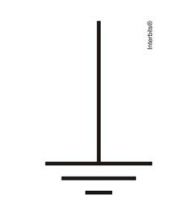

🔹 Ir para Problema 73 | 🔹 Ir para Problema 75
111. (ENEM PPL 2012)
No manual de uma máquina de lavar, o usuário vê o símbolo:

Este símbolo orienta o consumidor sobre a necessidade de a máquina ser ligada a
1) Esse símbolo representa a conexão de:
2) Sua função principal é:
Assinale a alternativa correta: